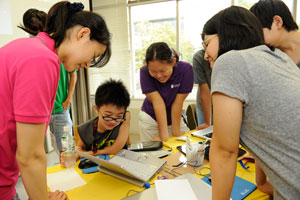

最先端のIT技術を学ぼう
01 一生の仲間と一緒に学ぶ！
プログラミングなどの新しい力は、特に「誰と学ぶか」というのはとても大切です。プログラミングなどは得に、独学だとエラーなど挫折させてしまうポイントがいくつも潜んでいます。何かあったら相談できる仲間がいることで、もっともっと実力がつけたくなる環境です。また、Life is Tech では学年関係なく、フラットなコミュニケーションをするので、学年、住まい、性別も違う親友がみつかるかもしれません！
プログラミングなどの新しい力は、特に「誰と学ぶか」というのはとても大切です。プログラミングなどは得に、独学だとエラーなど挫折させてしまうポイントがいくつも潜んでいます。何かあったら相談できる仲間がいることで、もっともっと実力がつけたくなる環境です。また、Life is Tech では学年関係なく、フラットなコミュニケーションをするので、学年、住まい、性別も違う親友がみつかるかもしれません！
キャンプでは、東京大学、京都大学などの大学のキャンパスの教室で学びます。自分が大学生になった時のイメージもきっとできるはず。キャンプがきっかけで志望校が決まることも。 スクールでは、Life is Tech !に協力してくれているIT企業のオフィスで学びます。実際に働く人の職場を見たり、会社の雰囲気を知ることは、社会に出るときに役に立つ経験です。 そんな普段の学校とは違う非日常的な特別な場所で、ITをどんどん学びましょう。